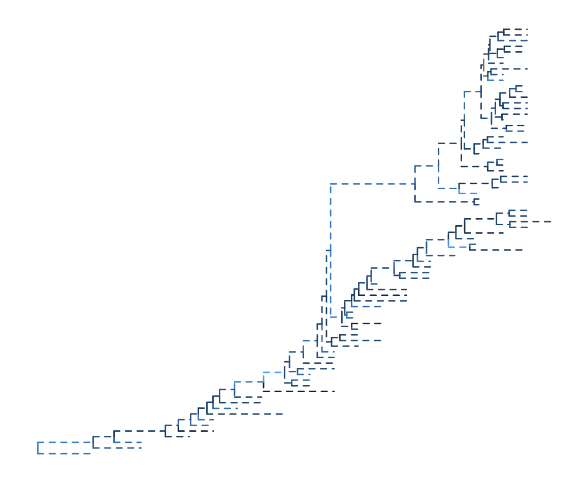
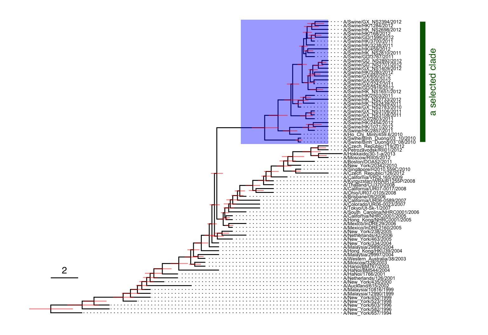
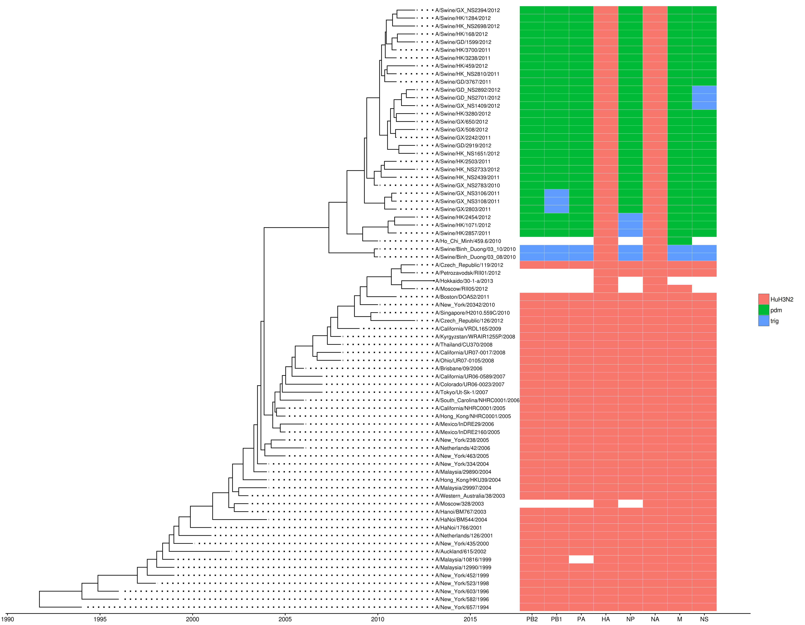
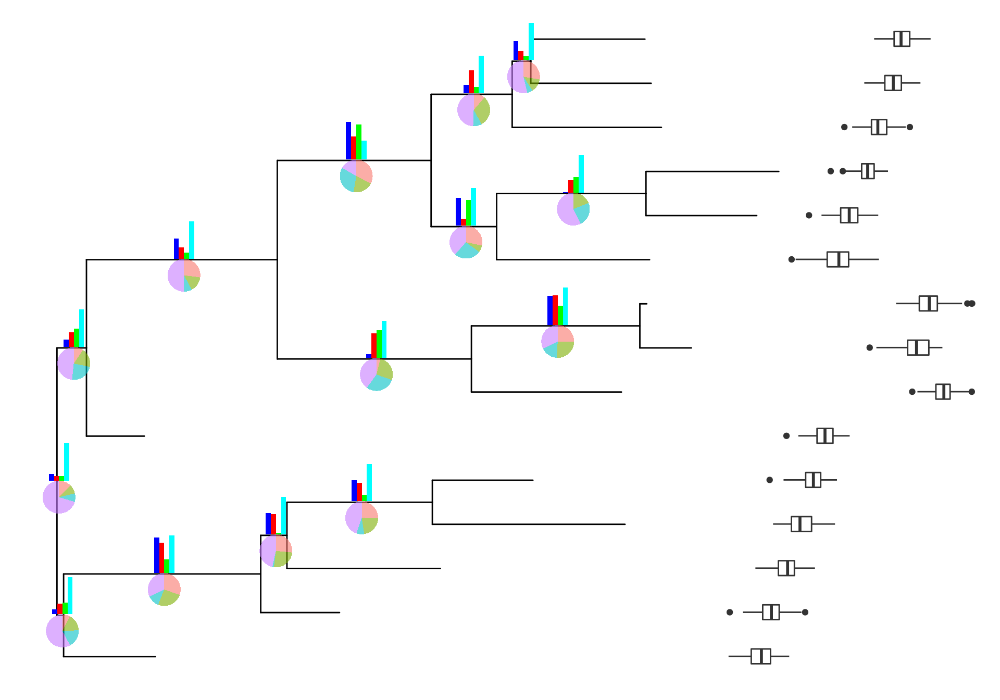

ggtree for visualization and annotation of phylogenetic trees
YU Guangchuang (余光创)

YU Guangchuang

Models are approximations or simplications of real-world systems
((virus8:0.05,((virus6:0.21,
(((virus2:0.39,virus1):0.28):0.2,
virus3):0.26):0.54,
(virus5:0.53,virus4))):0.1):0.41):0.92):0.98,
virus7)):0.02):0.08):0.83,
((virus10:0.85,virus9)):0.5):0.98);
R is still limited
ggtree
ape)ape)
ape)ape)phylobase)phylobase)OutbreakTools)phyloseq)
library(ggtree)
beast_file <- system.file("examples/MCC_FluA_H3.tree", package="ggtree")
rst_file <- system.file("examples/rst", package="ggtree")
mlc_file <- system.file("examples/mlc", package="ggtree")
beast_tree <- read.beast(beast_file)
codeml_tree <- read.codeml(rst_file, mlc_file)
merged_tree <- merge_tree(beast_tree, codeml_tree)
get.fields(merged_tree)## [1] "height" "height_0.95_HPD" "height_median"
## [4] "height_range" "length" "length_0.95_HPD"
## [7] "length_median" "length_range" "posterior"
## [10] "rate" "rate_0.95_HPD" "rate_median"
## [13] "rate_range" "t" "N"
## [16] "S" "dN_vs_dS" "dN"
## [19] "dS" "N_x_dN" "S_x_dS"
## [22] "marginal_subs" "joint_subs" "marginal_AA_subs"
## [25] "joint_AA_subs"fortify methods for converting tree objects to tidy datadata.frame is easy to manipulate, while tree object is hardfortify(merged_tree) %>% dplyr::as_data_frame()## Source: local data frame [151 x 34]
##
## node parent branch.length x y label isTip
## (int) (int) (dbl) (dbl) (dbl) (chr) (lgl)
## 1 1 115 1.7132967 21.273403 42 A/Hokkaido/30-1-a/2013 TRUE
## 2 2 94 0.4987642 12.273403 19 A/New_York/334/2004 TRUE
## 3 3 149 1.1007898 13.273403 20 A/New_York/463/2005 TRUE
## 4 4 81 1.4515245 7.273403 5 A/New_York/452/1999 TRUE
## 5 5 150 0.7584041 13.273403 22 A/New_York/238/2005 TRUE
## 6 6 80 0.9862567 6.273403 4 A/New_York/523/1998 TRUE
## 7 7 85 1.0140833 8.273403 9 A/New_York/435/2000 TRUE
## 8 8 78 1.9788317 4.273403 2 A/New_York/582/1996 TRUE
## 9 9 79 1.1150139 4.273403 3 A/New_York/603/1996 TRUE
## 10 10 77 2.2734027 2.273403 1 A/New_York/657/1994 TRUE
## .. ... ... ... ... ... ... ...
## Variables not shown: branch (dbl), angle (dbl), height (dbl),
## height_0.95_HPD (chr), height_median (dbl), height_range (chr), length
## (dbl), length_0.95_HPD (chr), length_median (dbl), length_range (chr),
## posterior (dbl), rate (dbl), rate_0.95_HPD (chr), rate_median (dbl),
## rate_range (chr), t (dbl), N (dbl), S (dbl), dN_vs_dS (dbl), dN (dbl),
## dS (dbl), N_x_dN (dbl), S_x_dS (dbl), marginal_subs (chr), joint_subs
## (chr), marginal_AA_subs (chr), joint_AA_subs (chr)df <- fortify(merged_tree)
df <- df[, c("dN_vs_dS", "dN", "dS", "rate")]
df <- na.omit(df)
df <- df[df$dN_vs_dS >=0 & df$dN_vs_dS <=1.5,] %>%
tidyr::gather(type, value, dN_vs_dS:dS)
df$type[df$type == "dN_vs_dS"] <- "dN/dS"
df$type %<>% factor(., levels=c("dN/dS", "dN", "dS"))
ggplot(df, aes(rate, value)) + geom_hex() +
facet_wrap(~type, scale="free_y")

I’m often asked how we make nice annotated tree figures for our papers. The real answer is “with creativity, practice and a lot of trial and error”. But of course the answer people are looking for is what tools do we use.
There are LOADS of different tools out there for plotting trees in various ways. I’ve listed my favourites for basic tree viewing below, but these really only work for quite simple visualisations, have differing and often non-overlapping feature sets, and are hard to customise. My solution to such problems is generally to turn to Python + R, and that is exactly the case here.
Kart Holt, https://holtlab.net/2015/10/03/plotting-trees-data/
Tools listed: Dendroscrope, FigTree, MicroReact, Interactive tree of life (iTOL) and ScripTree.

ggtree packageggplot2 to support tree objects


ggplot2-based tree viewersplotggphy, plot_tree) based on ggplot2ggtree packageggplot2
ggplot function to support tree objectsgeom_tree: extends ggplot2 to support tree structuregeom_tree: geometric layer to support tree structurep <- ggplot(beast_tree, aes(x,y)) + geom_tree() 
theme_tree & theme_tree2multiplot(p + theme_tree(), p + theme_tree2(), ncol=2)ggtree = ggplot() + geom_tree() + theme_tree()ggtree(beast_tree)
ggtree = ggplot() + geom_tree() + theme_tree()ggtree(beast_tree, branch.length='none', color='slateblue',
layout='fan', open.angle=180, size=2)
ggtree = ggplot() + geom_tree() + theme_tree()ggtree(beast_tree, aes(color=rate), linetype='dashed')
ggplot2 can be used directly in ggtreep <- ggtree(beast_tree)
(p + geom_point(aes(color=isTip), size=1) +
geom_text(aes(label=round(posterior*100)),
hjust=-.1, size=2.5)) %>% viewClade(node=118) ggplo2 doesn’t support subsettingggtree provides modified version of geometric layers to support it
(p + geom_point2(aes(subset= !is.na(posterior) & posterior > .75),
color='firebrick')) %>% viewClade(node=118)geom_treescale displays the tree scalep <- p + geom_treescale(x=0, y=10, offset=2)geom_tiplab: layer of tip labels (taxa names)p2 <- p + geom_tiplab(size=2)
p <- p + geom_tiplab(align=T, size=2, linesize=.3) + xlim(NA, 30)
multiplot(p2, p, ncol=2)
geom_hilight: highlight clade with background colorp <- p + geom_hilight(node=118, fill='blue', alpha=.4)geom_cladelabel: labeling cladep <- p + geom_cladelabel(118, 'a selected clade', offset=6.5, offset.text=.5,
barsiz=3, color='darkgreen', angle=90, hjust='center')geom_range: displays uncertainty of branch lengthsp <- p + geom_range('height_0.95_HPD', color='red', alpha=.5)
geom_taxalink: connecting related taxap <- p + geom_taxalink(45, 19, color='purple', arrow=arrow(length=unit(0.02, 'npc'))) +
geom_taxalink(46, 18, color='blue', arrow=arrow(length=unit(0.02, 'npc')))## p + geom_tippoint(aes(color=grepl("Swine", label)))
tip <- get.tree(beast_tree)$tip.label
host <- rep("Human", length(tip))
host[grep("Swine", tip)] <- "Swine"
host.df <- data.frame(taxa=tip, host=host)
p %<+% host.df + geom_tippoint(aes(color=host))library(ggtree)
beast_file <- system.file("examples/MCC_FluA_H3.tree", package="ggtree")
beast_tree <- read.beast(beast_file)
ggtree(beast_tree) + geom_treescale(x=0, y=10, offset=2) +
geom_tiplab(align=T, size=2, linesize=.3) + xlim(NA, 30) +
geom_hilight(node=118, fill='blue', alpha=.4) +
geom_cladelabel(118, 'a selected clade', offset=6.5,
offset.text=.5, barsiz=3, color='darkgreen',
angle=90, hjust='center') +
geom_range('height_0.95_HPD', color='red', alpha=.5) +
geom_taxalink(45, 19, color='purple',
arrow=arrow(length=unit(0.02, 'npc'))) +
geom_taxalink(46, 18, color='blue',
arrow=arrow(length=unit(0.02, 'npc'))) +
geom_tippoint(aes(color=grepl("Swine", label)))
p1 <- ggtree(merged_tree, aes(color=rate)) +
theme_tree2() + geom_tiplab(size=1.5) +
scale_color_continuous(high='red', low='green')
p2 <- p1 %<% rescale_tree(merged_tree, 'dN') + aes(color=dN)
multiplot(p1+xlim(NA, 25)+ggtitle('time-scaled tree'),
p2+xlim(NA, 0.07)+ggtitle('dN tree'), ncol=2)

ggplot2

RRmerge_tree: allows evolution evidences to be merged and comparedfortify methods: convert tree objects into tidy data framegeom_tree: extends ggplot2 to support tree structure